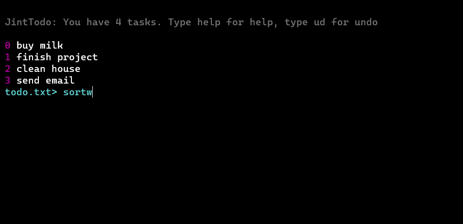
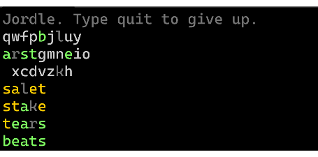

In class, we have been working on learning the Python programming languages. I have made several Python programs.
The first program I made is JintTodo, which is an application that lets you write down a todo list or notes within the terminal by editing a simple text-based file. You can add and delete tasks. JintTodo also supports multiple files.
Another program that I worked on a lot is Jordle, a minimalist Wordle clone that I made with unlimited words per day.
